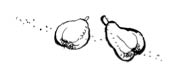

BURSA
Çok tadımız kaçtı çok...
Bursa’ya gidiş çok tatsız bir şey oldu. Tam işleri oturtmuşsun, okul seni anlamış, sen okulu anlamışsın, lojmandaki köpekleri bile ismen tanıyorsun, herkese hırlayan köpekler sana hırlamıyor, okula her geç kaldığımda bahçesinden çiçek koparıp öğretmene götürdüğüm teyze bile beni tanımış, “Aferin sana kerata, böyle geç kalan öğrenciye öğretmeni kurban olsun” falan deyip çiçeği kendi veriyor, şimdi git yeni şehre taşın! Hele Zekiye’yi dımdızlak bırakıp gitmek... Kız benim hiç farkımda değil ama olsun işte... Ahmet, “Sınıfın en çalışkanına âşık olur bu salak” diyor ya, eksiği var kızın. Bir de böyle ailesinin memur ya da daha ihtiyaç içinde bir aile de olması önemli; Zekiye’nin babası astsubay, annesi ev hanımı. Acayip akıllı ve de “İşte Hendek İşte Deve” şarkısını çok güzel söylüyor sınıfta falan... Öyle işte.
Allah’tan Ahmet de geliyor. Yemin ederim o gelmese yıkım çok daha büyük olacak. Babamın diğer arkadaşları da geliyor. Cümbür cemaat Bursa’ya gidiyoruz. Hani toplu ceza almanın o büyülü takım ruhu durumu da var. Sadece evin önündeki yağmur kanallarının içinde, elimizde kılıçlarımız uzun uzun konuştuğumuzu hatırlıyorum Ahmet’le. Süha ve Reha da olurdu bazen. Onlar Amerika’dan yeni dönmüşlerdi. Buick marka arabaları vardı inanmazsınız.
Nasıl taşındık gittik, cidden hiç hatırlamıyorum. Sadece, ilk taşındığımız ev -isterseniz ev demeyelim de koridor diyelim aramızda- eski garajın karşısında, kesinlikle insan evladının oturmayacağı bir yerdi. Garajın hemen üst tarafı ana yola bakıyor, nasıl trafik, nasıl gürültü! Ev, pardon koridor şöyle yapılmış; uzun bir dehliz düşünün, sağda ve solda apartman olduğu için yanlarında pencere ve balkon yok, sadece önde bir balkon, bir tane de arkada bir balkon; o da bir apartmanın arka duvarına bakıyor. Tek eğlencemiz, öndeki zor sığdığımız küçük balkona çıkıp geçen arabaların renkleri, tipleri üzerine üç kardeş (Bengül, Sanem, ben) oyun oynamaktı.
Unutmadığım diğer şey ise, aile olarak kimsenin şikâyetçi olmamasıydı. Ne annem babama bir laf etti, “Bu nasıl ev Erdoğan! Layık mıyım ben buralara?” diye, ne biz sonsuz çayırlardan oda hapsine düşmüş yılkı atlarının duygusuyla davrandık. Kıkkıdı kukkudu önümüze ne konduysa yedik... Babamın, gelen misafirlere yüzünde kocaman bir gülümsemeyle “İnanır mısınız, korna sesi sadece gece saat üç dört arası kesiliyor” diye anlatışı... Sebepsiz yere mutlu olmak... Küçük ailelerin büyük sırrı.
Bir ay falan oturduk böyle. Babam bir gün eve geldi, “Taşınıyoruz çocuklar” dedi. Heeeyyyoo!
Taşınmak bizim için rutin; sadece babamın memurluğunda 19 kez ev değiştirmişiz. Nerdeyse her ayrıldığımız evde de komşularımız arkamızdan ağladı, sadece bu evde öyle olmadı. 5. katta, araba tepesi dışında bir şey görmedik; komşu momşu yoktu çünkü.
Bir cumartesi... Kel, kamburumsu, yaşlı, gariban bir hamal bulmuş babam evi taşımak için. Ama adama ailecek acıyıp neredeyse evin tamamını biz taşıdık. Amca oturdu, öksüre öksüre sigara içti. “Kandırmış sizi” diyorsunuz ya, yok biz alışkınız; tüm hayatımız böyle geçti, başarısızlıklarla dolu.
Evi taşıdık, geldik bir yere ki... Vauv! (Urfa yöresinde bir şeyi beğenince “Vauv” derler. Ahmet’im Urfalı ya, o da kendini kaptırsın okurken diye yerel terimleri kullanıyorum.) Cennet, cennet! Ağaçlar, çocuklar, boş boş araziler... Kutluevler, Güllü Sokak, Bahadır Apt No: 3 Çekir- ge / Bursa.
Sarıldım babamın bacağına sevgiyle, o da başımı okşadı.
Budur!
